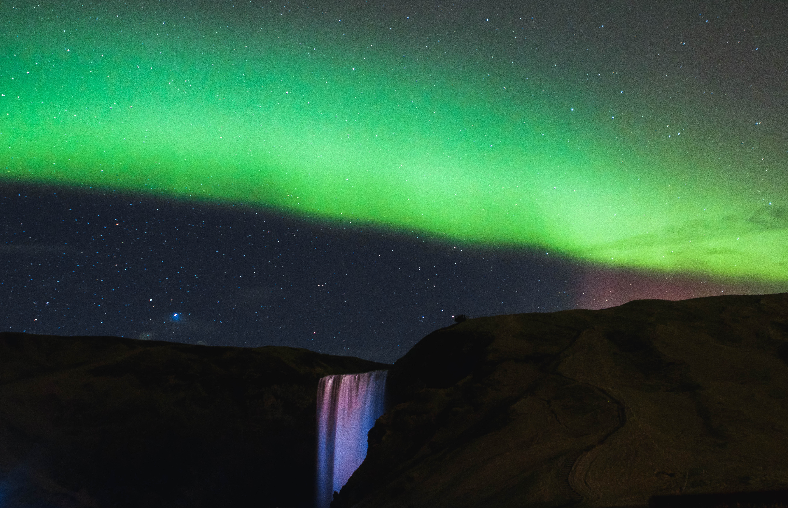

English is a West Germanic language that was first spoken in early medieval
England and eventually became a global lingua
franca.[5][6] It is named after the Angles
, one of the Germanic tribes that migrated
to the area of Great Britain that later
took their name, as England. Both names
derive from Anglia, a peninsula in the
Baltic Sea. The language is closely related
to Frisian and Low Saxon, and its vocabulary
has been significantly influenced by other
Germanic languages, particularly Norse
(a North Germanic language), and to a greater
extent by Latin and French.

English has developed over the course of more than 1,400 years. The earliest forms of English, a group of West Germanic (Ingvaeonic) dialects brought to Great Britain by Anglo-Saxon settlers in the 5th century, are collectively called Old English.